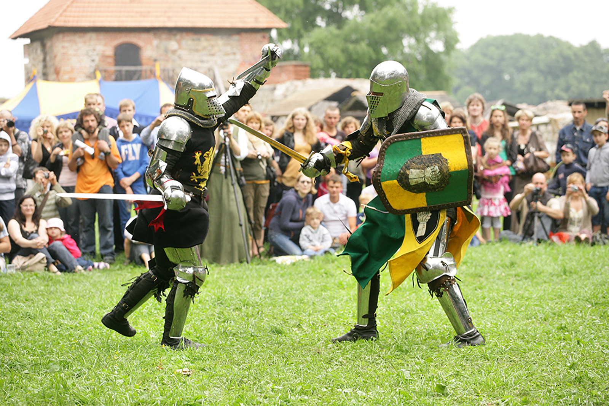

Pokazy walk rycerskich!
16.08.2019
Koniec wakacji, a ty wciąż spragniony przygód? Twoja dusza pragnie więcej rozrywki? Przyjedź do nas i weź udział w Pokazach walk rycerskich. Tak, dobrze słyszeliście już 28 sierpnia od godz 12. Na terenie naszego obiektu będą organizowane walki rycerskie jak za czasów średniowiecznych. Będą amatorskie walki dla gości którzy będą chcieli spróbować swych sił w turnieju rycerskim, jak i walki zawodowe dla wprawionych w boju rycerzy, którzy przyjeżdżają z Częstochowy.
Walki będą rozgrywane w formule 1 na 1 i będą trwały po 3min. Na miejscu będzie znajdował się zespół sanitarny oraz sędzia który ma 5 lat doświadczenia. Organizatorzy w pierwszej kolejności stawiają na bezpieczeństwo i dobrą zabawę. Dla najmłodszych będą również plastikowe miecze, aby mogli również bawić się pod opieką animatorów.
Walki będą rozgrywane w formule 1 na 1 i będą trwały po 3min. Na miejscu będzie znajdował się zespół sanitarny oraz sędzia który ma 5 lat doświadczenia. Organizatorzy w pierwszej kolejności stawiają na bezpieczeństwo i dobrą zabawę. Dla najmłodszych będą również plastikowe miecze, aby mogli również bawić się pod opieką animatorów.
Plan Imprezy:
12:00 - 12:15 | Start Imprezy i przywitanie gości przez Burmistrza.
12:15 - 13:45 |Zabawy dla dzieci oraz występy w tradycyjnych strojach.
13:45 - 15:30 | Turniej Rycerzy zawodowych.
15:30 - 17:30 | Amatorskie turnieje dla gości.
17:30 - 18:00 | Rozdanie nagród najbardziej zawziętym rycerzom.
18:00 - 19:00 | Sztuka pt. "Dzień w zamku królewskim".
19:00 - 22:00 | Muzyka oraz Tradycyjny taniec.
22:00 - 23:00 | Staroludowe przyśpiewki wykonane przez barda, Michała Roźniewicza.
23:00 - 23:05 | Zakończenie imprezy.
- bezpłatne toalety dla gości.
- Wystawy średniowiecznych narzędzi oraz broni.
- Dmuchane atrakcje dla dzieci.
- Budki z lokalnym alkoholem.
- Pokazy połykacza ognia.
- Prezentacje architektur zamków Polskich.
- Konkursy dla wszystkich.
- Strzelnica z łukami.
12:15 - 13:45 |Zabawy dla dzieci oraz występy w tradycyjnych strojach.
13:45 - 15:30 | Turniej Rycerzy zawodowych.
15:30 - 17:30 | Amatorskie turnieje dla gości.
17:30 - 18:00 | Rozdanie nagród najbardziej zawziętym rycerzom.
18:00 - 19:00 | Sztuka pt. "Dzień w zamku królewskim".
19:00 - 22:00 | Muzyka oraz Tradycyjny taniec.
22:00 - 23:00 | Staroludowe przyśpiewki wykonane przez barda, Michała Roźniewicza.
23:00 - 23:05 | Zakończenie imprezy.
Podczas Imprezy:
- Budki serwujące tradycyjne polskie potrawy.- bezpłatne toalety dla gości.
- Wystawy średniowiecznych narzędzi oraz broni.
- Dmuchane atrakcje dla dzieci.
- Budki z lokalnym alkoholem.
- Pokazy połykacza ognia.
- Prezentacje architektur zamków Polskich.
- Konkursy dla wszystkich.
- Strzelnica z łukami.